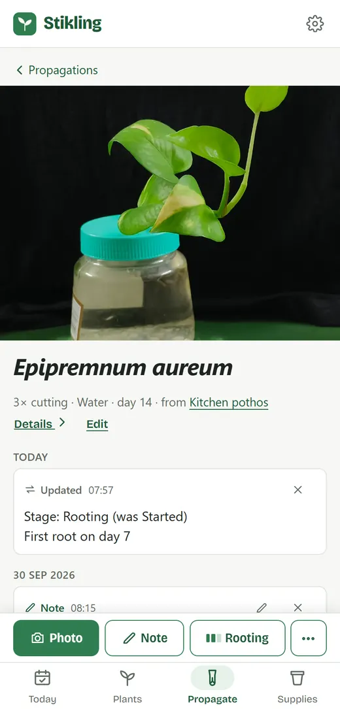
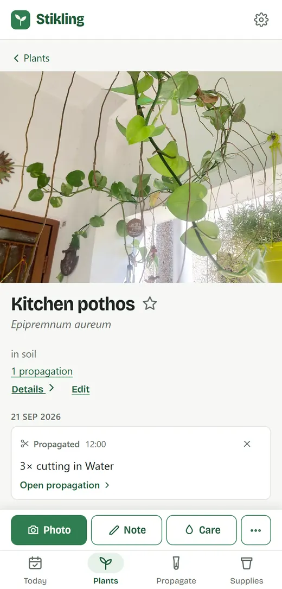

Keep track of your plants and the cuttings you grow from them
Each one gets a history of photos and notes: where it came from, what it's rooting in, and how long it took.
It's free and works offline. Everything is kept on your device, and you don't need an account.
Loading the app
The first visit downloads all of it, so it works offline later. After that it opens straight away.


The life of one cutting
A cutting, or anything else you grow into a new plant, gets a page of its own, linked to the plant it came from. Stikling calls them propagations. Here is one pothos cutting, from the first snip to a plant of its own.
-
Taken
Day 1
Snipped from the pothos on the shelf and put in a jar of water. The plant's page now lists it too.
-
Rooting
Day 14
The first roots. One tap moves it on and notes the day, and a photo goes on its history.
-
Potted up
Day 31
Into soil and onto your plant list as a plant of its own, which still knows the plant it came from.
-
Passed on
Later
Take cuttings from it in turn, or give one to a friend and note who got it. The family line carries on.
What else it keeps
All of it is optional. A plant with just a name is fine.
-
Today
What needs a look: cuttings you haven't checked on for a while, treatments that are due, and anything you flagged.
-
Care
Watering, feeding and repotting, each logged in a tap, along with the pots, soil mixes and fertilisers you use.
-
Pests
Spider mites or thrips on a few plants: one case keeps the treatments, when the next is due, and the quarantine.
-
What roots best
Start cuttings in water, LECA, perlite and moss side by side, and see which rooted and how fast.
-
Your old photos
Pick photos from your gallery and each lands on the day it was taken, so a history goes back to when you got the plant.
-
Phone and computer
Sign in to keep the same plants on every device, or save everything to a backup file. You don't need either.
Questions
The Help page has more.
Is it free?
Yes. There are no ads, no subscription and nothing to unlock. It's a hobby project, and it stays free.
Do I need an account?
No. Everything works without one. Signing in only keeps your plants the same on every device you use.
Does it work without signal?
Yes. After the first visit everything is kept on your device, photos included, so it opens and works offline.
How do I get it on my phone?
Open stikling.app in your phone's browser. On an iPhone, tap the Share button in Safari and pick Add to Home Screen. On Android, open Chrome's menu and pick Install app. It then opens like any other app.
Where are my plants kept?
On your device, in the browser's own storage. If you sign in, they're also kept on the Stikling server so your other devices get them. There are no ads, no analytics and no tracking. The privacy page has the details.
Is it open source?
Yes. The code is on GitHub, where you can also report a problem or suggest something.